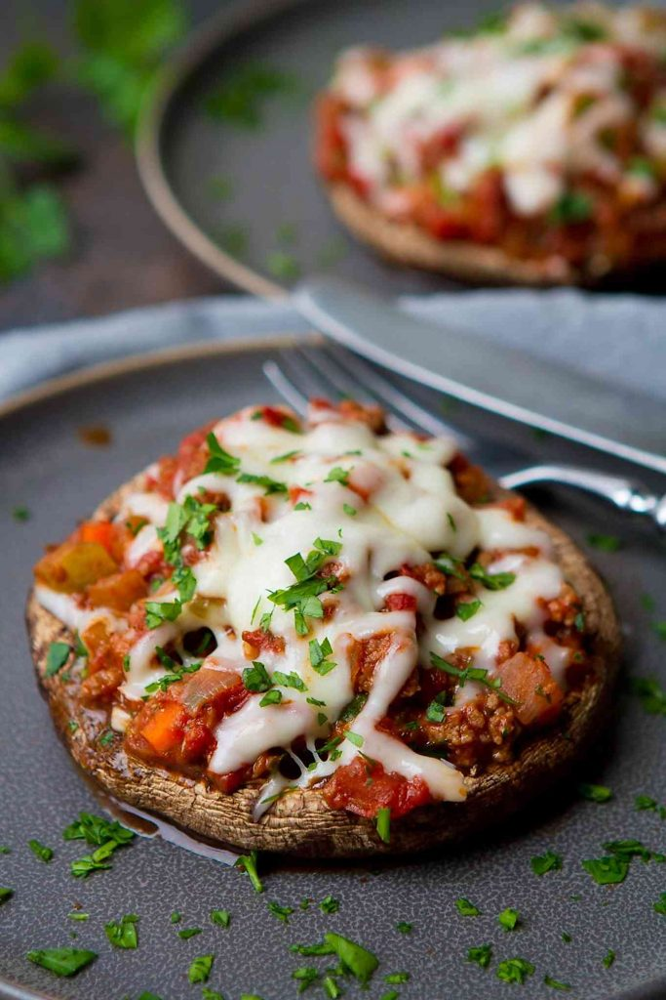
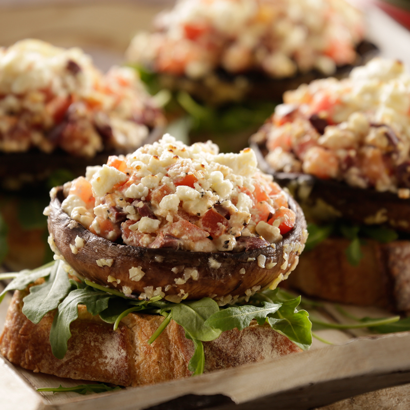
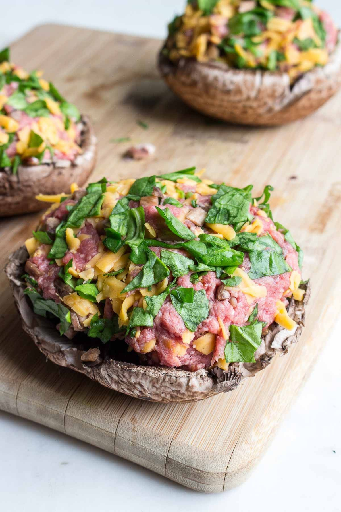

What to eat during COVID-19?
*Meta analysis of 81 scientific works on immunity and Coronavirus family viruses infection, including COVID-19

Vitamin C: regular intake of vitamin C decreases the risk of
infecting with viruses of
coronavirus family, as well as decreases the duration and severity of cold symptoms. Consumption of 0.2g/day decreases the
duration of disease
from 8-14% among children. For the same result adults have to take 0.5-0.6g/day.
Vitamin C reach food: Citruses, red pepper, tomatoes, broccoli
Vitamin C reach food: Citruses, red pepper, tomatoes, broccoli

Probiotics: Daily use of probiotics decreases the probability of infection. Most of the studies indicate that the main role
in this effect
is thanks to Labtobacillus casei and Lactobacillus rhamnosus, which can be found in dairy products. Probiotics are favorable
during vaccination period as well:
people who used probiotics during vaccination produces more
antibodies
in comparison with control.
Keep in mind, that not all dairy product contain active bacteria, fore mor living bacteria intake chose local production, with shelf-life 3-20 days.
Keep in mind, that not all dairy product contain active bacteria, fore mor living bacteria intake chose local production, with shelf-life 3-20 days.

β-Glucans: Besides improving cholesterol level and boosting hearth health this dietary fiber have immunomodulating
activity, by this
mean decreasing the risk of recurrent respiratory infections. It was shown, that β-glucans increase the level of
IgA ,
boosting local (mucosal)
immunity. In simple terms, this stuff, which contains in mushrooms, cereals prevents you to get infected.
Cooking mushrooms increase the percent of β-glucans in the dry mass but frying decreases
Cooking mushrooms increase the percent of β-glucans in the dry mass but frying decreases

Vitamin A:Unlike
previous ones, vitamin A cannot help preventing infection, but it contributes to the clearance of the lungs, shortens the
postinfection preiod. Vitamin A can slightly increases the risk of cancer of active smokers, so
quit bad habits before starting good ones.
Vitamin A contains in carrots, broccoli, spinach, sweet red pepper
Vitamin A contains in carrots, broccoli, spinach, sweet red pepper

Omega 3 rich product are considered as the food of millenials. Besides being good
nutrient this fatty acid
acts as precursor of antiinflammatory moleculs, by this mean shutting down excessive inflammation, without adverse effect on
spelen and liver.
Omega-3 fatty acids are abundant in seafoods, wallnut, avocado, chia seeds.
Omega-3 fatty acids are abundant in seafoods, wallnut, avocado, chia seeds.

Zinc: Intake of Zn
after first symptoms of common cold shortens the duration of the disease,
and further
consumption (10-15 mg/day) decreases the risk of getting recurrent infection. Inhibiting the activity of RNA polymerase
and by decreasing inflammation, Zn grants precious time to the infected organism to heal itself without adverse effects. Some
checmicals are binding Zn, preventing from
absorption by the organism.
Zinc can be found in high quantities in meat, shellfish (oyster), nuts, dark chocolate
Zinc can be found in high quantities in meat, shellfish (oyster), nuts, dark chocolate

Everyday intake of Vigittamin D decreases the
risk of acute respiratory infections. A preprint indicates
that low level of Vitamin D led to severe cases of COVID-19, in contrary, people with normal level of that vitamin have 20% less
probability to develop severe symptoms.
Vitamin D rich foods are fish, liver, cheese, egg yolk.
Vitamin D rich foods are fish, liver, cheese, egg yolk.